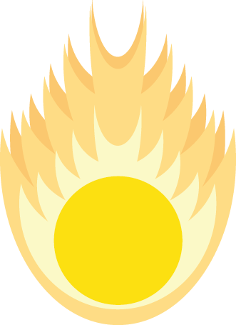
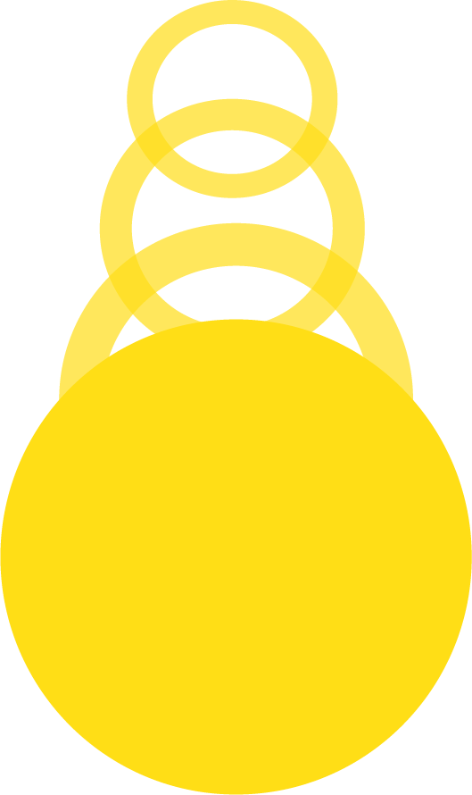
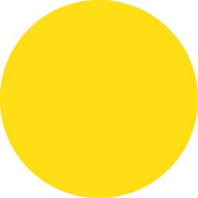

Colors of the Sun
By Kameron Rhew
Long ago, the world was full of color and life. But because of the actions of man, that world had lost it's lusturous glow, and with it, went it's color.
The world was dull and grey for the longest time. However, a blessing from the sun itself manifested and fell from the heavens above.

The world had gained the blessing of color, the last of it imbued within the sun. The strange entity was confused at the dull world layed before it.
However, the entity felt a presence. A presence similar to it's own, but different somehow. It looked off into the horizon, seeing where this presence resided.
The entity felt drawn to them, almost instinctively. It needed to go to them, to embrace them. It knew what it needed to do, and where to go first.

The entity had made it's way through the once gray desert, traversing through the unscalable walls of the canyon sorrounding the volcano.
It had made it to the Volcanyon. However, the gap between the canyon itself and the volcano was too wide to ever reach. But it was determined to make it across, And the only way that could happen...
...was to take a leap of faith.
It had made the jump, and had succeeded in crossing to the other side. And on the other side laid the presence that the yellow entity had felt during it's first moments.
It felt empowered, as if it was meant to take the presence for itself. It somehow knew what to do without realizing, and followed it's instincts.


The rock split open with a glowing light, the presence getting stronger as the stone crumbled before the entity. It was truly a remarkable sight to behold.
The red entity was freed from it's prison, and was confused. The yellow entity had told it everything that the other knew.
They looked onward into the horizon, the volcano suddenly brimming with color, and was spreading to the surrounding region. Then they saw their next destination.
They sprinted down the volcano as fast as they could muster, quickly dashing through the now lavender tinted forest before arriving at the foot of the mountain.
The climb took quite a while, but the journey was not hard for the two. They made there way up the mountain until...
They had found the prison of the final presence. another entity must have been trapped inside, and so they knew what they both had to do.
They used both of their power, circling around the crystal as they both began to glow. The crystal started to weaken with their combined power until...
The final entity was free, just as confused and dazed as the red entity was when it was freed.
suddenly, the ground rumbled. The spire between the colored locations which they had never noticed before started to glow with the light of all the entities.
To be continued...